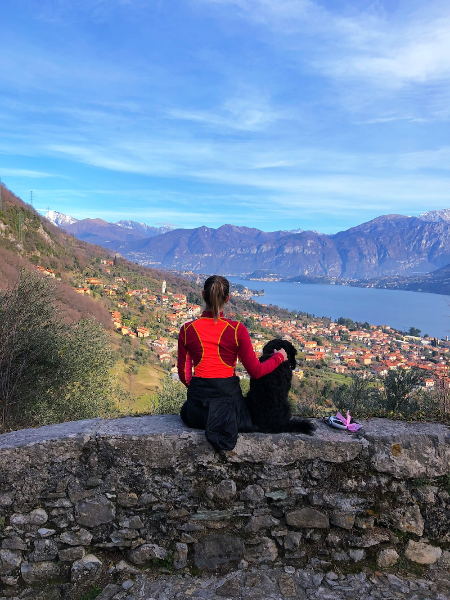
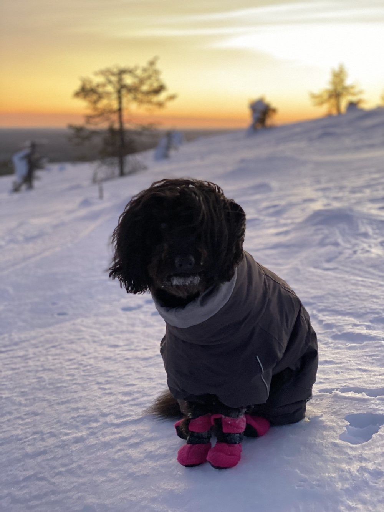
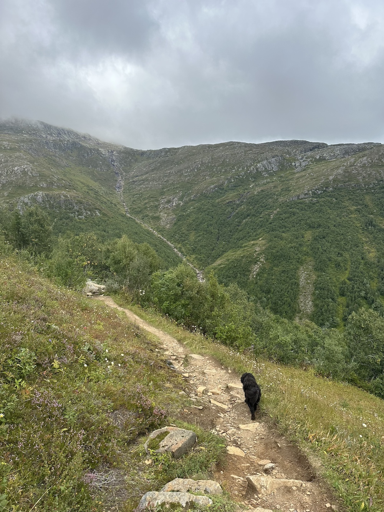
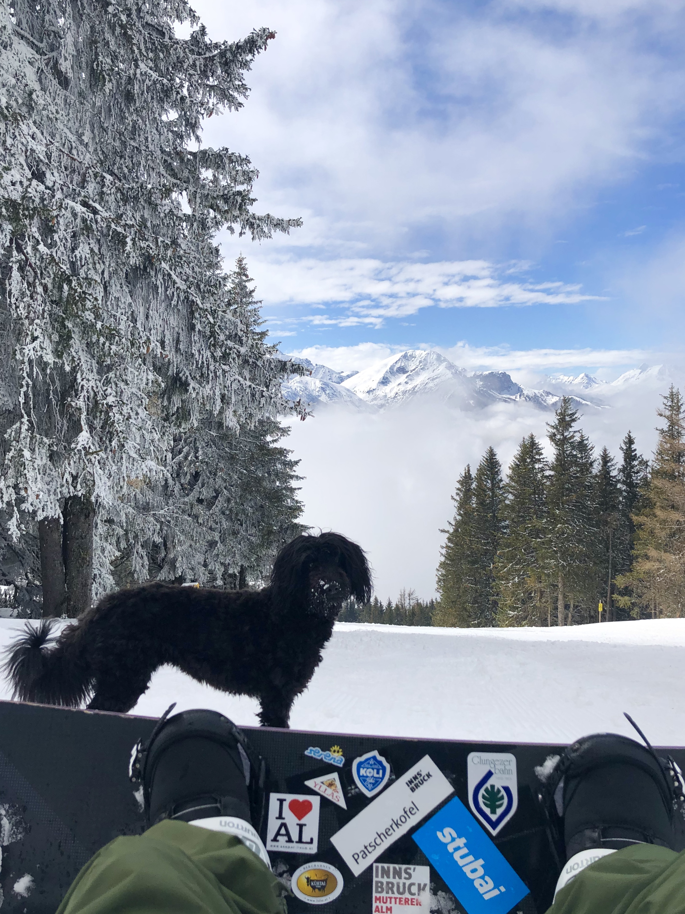

Mountaineer of the Month: Mona the Dog
This is the place to find information about hiking with your dog. Hiking with a dog can be awesome and rewarding at best but super dangerous at worst. Here you can find some great hiking locations to go with your dog and some usuful tips about what you need to take into consideration when hiking in these locations.

Location scouting
When deciding where to take your dog for a hike check out blah blah blah...
Here are some of the places we can highly recommend:
(click the image to open the link)



Useful tips when travelling with a dog
Here are some great tips for you what to take into consideration when travelling with your dog whether in Finland or abroad.
- Make sure you have scheduled enough time for your trip. Travelling with a dog can take some extra time.
- Make sure you always have enough snacks (and possibly fresh drinking water) for both of you.
- Make sure you have proper clothing for both of you for different weather types during the travels.
- Make sure your dogs vaccinations and anthelmintics are up to date according to the regulations of the countries youre going to visit.
- When hiking or just strolling in the city, take a break when either of you feel like it. New places or heights can be overwhelming for humans and dogs.
- Train your dog to be OFF THE LEASH. Travelling is so much more fun that way and in many countries youre allowed to keep the dog off the leash if you have trained it well.